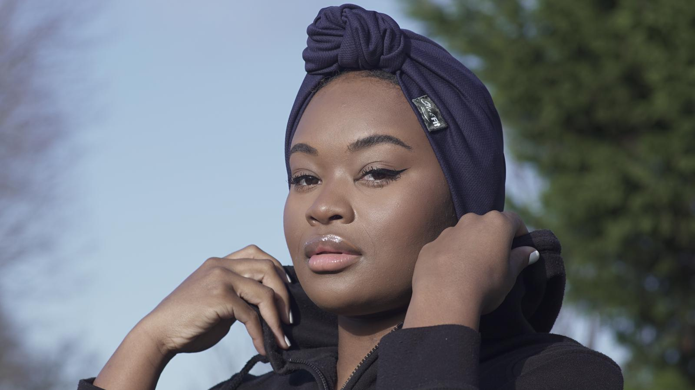

The ultimate must-have product in athletic and hair-protecting headwear is here. Our handmade hassle-free, easily adjustable fitted headwraps mean no more choosing between your hair and that workout... Do Both. Wear with or without the conveniently detachable smooth satin undercap - customised 2-in-1 functionality to meet your needs.

Choosing between your workout or your hair?
DO BOTH!
Hassel-free fitted headwraps, perfect for those bad (or great) hair days.

© 2019 SlickFit